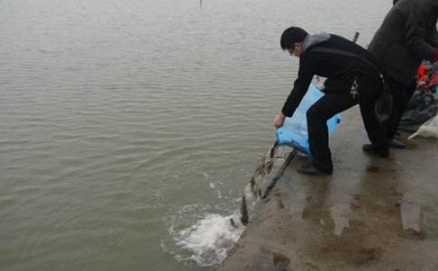

“不放不知道。”这是我经常对围观
我的文章《放生三年了》，不知道被谁做成了慈善点击，也有一些人打电话来问如何放。还有人要我详细的说
三年前，开始放生。要查有多少生命，很注重福报大小。要注重什么生命放起来回报大，等等。后来看了诸葛亮的《诫外甥书》----“忍屈伸，去细碎，广咨问”。这个去细碎，让我有所感悟，从此不再计较这些小事情，放开心量。
三年前，收入是每月600，写专栏为生，是股票专栏，我的职业是股评。大家看到电视里的股评家侃侃而谈，其实大都是自己没有钱做股票，是赚工资的。我每个月放生100元。其他时间念佛，当时我是在家写专栏，属于自由职业吧。看到我写的文章很有气度，却不知道我随时会没有饭吃，没有电脑，要去网吧写文章。我的狗到了吃饭时间会去网吧找我。放生是我和女朋友的一个乐趣，我们什么都没有，也就更加看得开一些。当时钱不多，但是
03年5月非典的时候，网吧全关门。我没电脑，没地方写稿。我不知道求谁好，于是跪床上求阿弥陀佛，结果次日妹妹给了我3000元买电脑。6个月以后，我有了另外一个专栏可写，月收入1200元拉。同时认识了一个公司的副总，经常聊QQ。他说公司好了让我去帮忙，还给我汇了600元。
10月，两份专栏因为特殊原因停止。我突然没有了收入，这个时候马上就接到杭州副总的邀请，让我去帮忙，并且再预支给我1000元路费。我欣然前往。这个时候我已经在长江放生10个月。刚到杭州，看到车站的夜色和焰火，象在迎接我一样。我再度出现了野心，感觉自己一定会在这个城市发财。
果然，我五个月在这里赚了13万，我是新来的，还只有高中文凭。而我的同事有本科证却每月只有2500元。这和我私下找了一些客户有关。我的放生开始大了起来，也更加多了。每次放，500元以下都懒得去，去一次都放800多以上，我们的放
一个诗歌描述西湖：
去年曾见此湖图，不信
我们越来越喜欢西湖。有一次公司的一个大客户要和我单独合作，我那几天感觉有光照着自己一样，心想事成。当时以为是
随着客户的增加，后来我的贪心促使我扔了压力开始加大的工作，去云南赌博。输光后
我的体会，做股票最总是靠福分的，因为做股票你的即使再好，也不如认识操盘手。操盘手是控制市场走势的。我以前没福的时候，认识一个大操盘手，我却不信他，等到信了，缘分也结束了。我总在感慨。有了技术没有福分的人，在这个世界上太多了。各个行业都如此。
后来我又离开了广州公司，因为巨大的工作压力。做股票这行，工作压力之大不可想象，往往
福分的折减造成。离开以后，我在家工作。同时发愿放生2000斤泥鳅，当时认为自己一年怎么也能赚够就发愿了，不过没有工作，还是有点没底。可发愿以后两个半月，现在已经放了1713斤泥鳅了。任务马上完成。完成以后，我要放一只超级大乌龟来庆祝。
发愿以后的感应我一定要写出来供养同修。
发愿以后，我认识了一个操盘手，告诉我的一个股次日涨停。我于是和他合作开发客户。我找有钱人做股，他提供股票，赚了我收3成利润。我每月收入超过25000。我把钱不太计较，我说，今年不存钱，就是放生，帮助一些亲戚朋友。我借给朋友一些钱，也给妹妹一些钱，然后留个几千用就够。其他的来放生，放生钱超过了我们收入的30%。
我做股票11年了，技术公认还不错，可是依旧不赚钱。连续亏损8年多，亏光以后给别人做，才开始赚一些。但是给别人做也是别人亏自己赚，只有在我这次发愿以后，出现了我和客户都赚的情况。这是所有经济人的追求和梦想。我在中国股票市场牛市还没有来之前就得到了。最后我们买的股，大盘突然大跌，我们的股却涨了2.5%，我客户的30万股
发愿以后，佛天感动，一定会很快让你加倍满愿。如果你不是为自己，如果你
这让我想起《影尘回忆录》里面，几个
还让我想起一次单位同事一起过毕业墙，墙很高，有2.3米，要男女同事不通过工具全部过去。我们开始也认为不可能，后来掌握了方法，很快全部过去了。
你真诚，佛会帮你。有什么难事呢？佛是西方现在所推崇的潜
昨日江边春水生，艨瞳巨舰一毛轻，向来枉费推移力，此日中流
我们一生多少梦想，多少憧憬，多少痴盼。没有因缘的时候，他是一个水中花。
我们经常放乌龟，有一次去超市，看到几个大乌龟，我对一只最大的乌龟说：“等我过几天有钱，就来放你们走。”回到家后，我和女朋友倒头睡在床上，
也把这个空头许诺给忘记了。睡着睡着，女朋友梦到那个大乌龟要我们快点去救他，否则就来不及了。我女朋友马上起来推我，当时我一分钱没有，就打电话找妹妹要了200元，马上汇款就过来了，我们去了超市。那几个乌龟还在，离鱼缸两米远的时候，乌龟在向我们爬。我女朋友问：“是你们谁托梦告诉我快来救救你了？”几个乌龟都不说话，我们就抓起一个问，那个乌龟冲我们眨了左眼，我们大喜，就买下了他和另外一个来过秤，一个乌龟在过秤前撒尿，给我们省了2元多钱。好象知道我们穷一样。后来这两个乌龟我们舍不得放，就在家养着了。
还有一次，女朋友梦到一个大神龟，哭了。女朋友问他为什么哭，他说“国家看似太平，但是人民造的杀业太大，动物遭殃。心里难受。”他还说要把他的两个儿子送给我女朋友。当时女朋友和我商量一下，觉得暂时不要孩子。后来我说这个故事给不学佛的哥们，他们就说“龟儿子。”来笑话我，于是也不再和人提。
其实乌龟是前世修行人，今生放生最好的归宿就是寺院的放生池塘，还有机会听到佛音。乌龟我放得不算多，三年也就100多只，但是感应却非常猛烈，也说明乌龟是有
我小时候曾经大量打杀青蛙，数量在几千只。小时候我就一直有皮肤病，也没有想过原因。2000年，也就是在我小时候打杀青蛙，扒皮烤肉的二十年以后，有一天我从大拇指到右臂之间一夜之间出现一大片黑斑，后来逐渐消退，但是大拇指没有褪，并且开始痒，两天就要自己用指甲刀剪掉一层皮，并且喜欢在火边
烤，烤得痒而痛才停止。简直就是活现报的典范了。妈妈让我用药我也不用，我知道是讨债，就让可怜的小青蛙讨个痛快吧。“为什么小时候没有人告诉我这些？”我有时候很
每次去黄沙码头水产市场放过泥鳅以后，都会发现附近有一只无助的青蛙，他跳出了主人的牢笼。我马上帮他们送进水中。这是
青蛙适合在有菏叶的池塘，或者有小洲的江里，因为是两栖动物。他们柔软友善，吃小虫。我愿意和他们做朋友。完成2000斤泥鳅发愿以后我就考察地形来放些青蛙。我的拇指是对我的警告，我不幻想他快点好了，这太便宜我了。让这个痛继续留下吧。
泥鳅吃泥，帮助环境保护。还吃点小微生物和小虫。他们喜欢肥沃的泥土，不大适合没有泥土的水。生命力强，喜欢逆水上游。还知道
大鲤鱼是最有趣的动物。如果放他，他会报喜。我放的鲤鱼其实不算多。但是却有过三次鲤鱼报喜经历。第一次，我基本没钱生活的情况下，梦到和父亲，女朋友在长江游玩，有无数的大鲤鱼在江里翻滚，都露着大脊背，我梦里想，我放的鱼都长大了。然后半个月，我就进了一家高收入的机构。第二次，我没有工作的时候，心里比较迷茫，不知道自己目前应该如何做。这时候梦到“地下的河里，有一些鲤鱼，但是数量不算多，还比较小”。这是鲤鱼告诉我，放生念佛还不够，要继续，坚持，很快会有好果报的。
第三次，我在汕头做电视节目，去放鳗鱼和乌龟，正在放，有一个大红鲤鱼突然从池塘吃蹦起，蹦得非常高，象在为我们的行为喝彩，也象在给我报喜。次日，我就得到意外收入2000，然后很快得到更加意外的收入32000。再以后一个多月，又得到将近60000。经常放生，这类事情真是遇到太多太多了。
鳝鱼放得不少，现在都是养殖的，但是只要是命就放，绝对不想那么多，现在基本什么都是养殖的了。找不是养殖的动物都难。鳝鱼似乎比较怕冷，除此以外和泥鳅差不多，生存能力强，吃水草，小虫，还吃比他小很多的小鱼。鳝鱼同样非常感恩，放了以后，一些鳝鱼会将头高高伸出水面，最后看一眼是谁放了他。
有个故事说，一个人煮鳝鱼，熟了以后发现鳝鱼把肚子挺得很高，出了水面，仔细研究，鳝鱼肚子里有鱼子。原来鳝鱼妈妈是为了保护自己的孩子不被煮死。这个人看到以后，就极其感伤，再不肯吃肉。这个故事告诉我们要放鱼子。鱼子离开鱼还能活很久。鱼子的特点是数量大。
鱼子放在浅水中，一层细沙一层鱼子，一层草。这样可避免他们成为大鱼的美餐。这可是细心的人放的呀。我和女朋友曾经买了500元两大箱子鱼子，倒进了珠江。汗。
佛菩萨圣诞放生，确实和平时不同。有一次阿弥陀佛圣诞，我去放生，回来的时候，公共汽车似乎变成了豪华宫殿，喇叭中播放的杂乱的音乐变成了朗朗的。
佛号，公路上其他的车也都走走停停动静有致美妙无伦暗合佛音。境界美妙无比。不禁让我想到“你在这边放生，